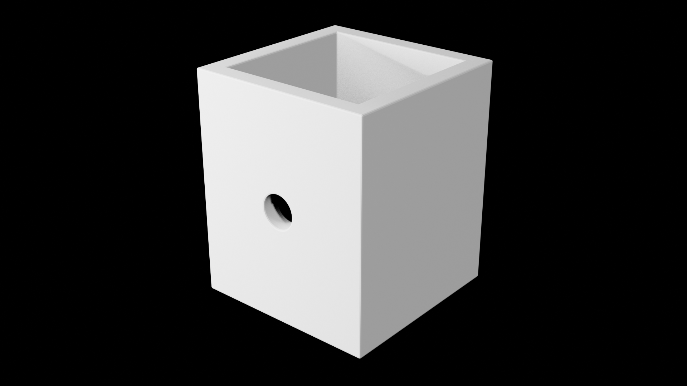

Las inundaciones representan uno de los desafíos más críticos del sureste de México. Desarrollamos una red de estaciones meteorológicas e hidrológicas autónomas de largo alcance capaz de vigilar cauces, evaluar riesgos y alertar a comunidades vulnerables en tiempo real sin depender de internet comercial ni señal celular.
Gateway LoRa 32 conectado con sincronización en la nube (Supabase Realtime) y lectura ultrasónica cada 1.5s
Nivel del Río (Agua)
Caudal nominal estable
Capacidad de Cuenca
Margen al Desborde
Umbral crítico: 5.20m
"Las inundaciones son uno de los mayores desafíos del sureste mexicano. Buscamos equipos capaces de analizar el problema, generar ideas y proponer soluciones para prevenir, monitorear o responder mejor."
— Texto oficial de la convocatoria desafia.mx
DesafIA es la plataforma donde estudiantes de bachillerato, docentes, investigadores y aliados institucionales colaboran para diseñar soluciones tecnológicas con impacto real en el territorio. Conectamos aprendizaje, innovación y acción directa para proteger a las familias y cuencas hidrológicas de Tabasco y regiones hermanas.
Mentes creativas de bachillerato y clubes STEM listas para innovar.
Acompañamiento especializado en ingeniería, hidráulica y territorio.
"Conectamos aprendizaje, innovación y acción para construir mejores comunidades."
No se trata de generar código o maquetas aisladas: DesafIA impulsa tecnología funcional que pueda ser desplegada en los márgenes de los ríos Grijalva, Carrizal, Usumacinta y zonas bajas del sureste.
Cita del Evento Final
Viernes 25 · Sep · 2026
La convocatoria desafia.mx articula 6 dimensiones estratégicas para enfrentar el agua. Descubre cómo nuestra Estación Meteorológica e Hidrológica LoRa 32 responde técnica y comunitariamente a cada uno de ellos.
Definición Oficial desafia.mx
"Infraestructura verde y diseño urbano para mitigar el impacto del agua."
// Cómo lo resuelve nuestra estación
Monitoreo continuo de azolvamiento y acumulación en drenes pluviales antes del temporal. Provee métricas para planificar bordos de contención y zonas de amortiguamiento ecológico.
Definición Oficial desafia.mx
"Sensores y datos abiertos para vigilar niveles de ríos en tiempo real."
// Nuestra Solución Hardware & Nube
Sensor ultrasónico estanco con compensación de punto ciego (20 cm a 6.0 m) y tubo impreso 3D. Transmisión inalámbrica LoRa 915 MHz a 15 km y sincronización directa a base de datos abierta en Supabase.
Definición Oficial desafia.mx
"Modelado de zonas críticas y protocolos de actuación institucional."
// Cómo lo resuelve nuestra estación
Algoritmo de cálculo de corte transversal y umbrales calibrados por estación. Genera clasificaciones inmediatas: Normal (<3.5m), Precaución (3.5-5.2m) y Peligro de Desborde (>5.2m) para Protección Civil.
Definición Oficial desafia.mx
"Sistemas de comunicación directa para poblaciones vulnerables."
// Cómo lo resuelve nuestra estación
Notificaciones automáticas en pantalla PWA para celular y señales sonoras locales. Emite alertas antes de que el agua sobrepase los bordes para permitir la evacuación ordenada de bienes y familias.
Definición Oficial desafia.mx
"Cultura de resiliencia y sensibilización en escuelas y barrios."
// Cómo lo resuelve nuestra estación
"Modo Ciudadano" público sin contraseñas ni barreras. Interfaz gráfica con columnas de agua y recomendaciones prácticas en lenguaje natural para que escuelas, niños y vecinos entiendan la hidrología local.
Definición Oficial desafia.mx
"Estrategias para la reconstrucción económica y social tras el evento."
// Cómo lo resuelve nuestra estación
Historial analítico de crecidas en base de datos. Permite calcular tiempos de desagüe, curvas de remanso y respaldar solicitudes de apoyo agrícola, reactivación comercial y obras de desagüe permanente.
Experimenta cómo reacciona el algoritmo de la estación ante diferentes alturas de agua. Desliza el nivel o pulsa los botones de escenario para observar la respuesta del semáforo y las medidas preventivas.
Nivel del Río
Capacidad de la Cuenca
Cargar Escenarios Predefinidos:
El cauce del río opera dentro de los márgenes normales. No existe peligro para actividades recreativas, navegación menor ni asentamientos ribereños.
Las contingencias por inundación suelen cortar la energía eléctrica y saturar las antenas de telefonía móvil. Nuestra estación fue diseñada con una topología distribuida off-grid:
Transmisión de paquetes cifrados a más de 15 km en línea de vista sin costo recurrente de tarjeta SIM ni necesidad de red celular.
Cápsula impermeable protegida contra salpicaduras y humedad selvática. Calibrada para medir de 20 cm hasta 6.00 metros de profundidad con diagnóstico de salud de sonda.
Receptor con pantalla OLED SSD1306, retransmisión por WebSockets en tiempo real y persistencia en base de datos PostgreSQL abierta para consulta pública.

Punto Ciego
20 cm Físico
Rango Máximo
6.0 Metros
Consumo Standby
< 15 mA
Fecha principal del Hackatón DesafIA en el sureste mexicano
Lanzamiento oficial en planteles y medios.
Inscripción formal de equipos y planteles.
Sesiones técnicas con especialistas en cuencas.
Jornada intensiva de prototipado y validación.
Evaluación de soluciones y premiación final.
Premio 01
Premio 02
Premio 03 · Postulado
Premio 04
Premio 05
* Todos los equipos participantes reciben constancia digital oficial de participación con valor curricular.
// Instituciones Aliadas de desafia.mx
Accede al panel de control en tiempo real, activa la sincronización con Supabase o simula escenarios de crecida crítica directamente en el navegador.
Compatible con modo Ciudadano público y modo Administrador mediante USB Web Serial LoRa.